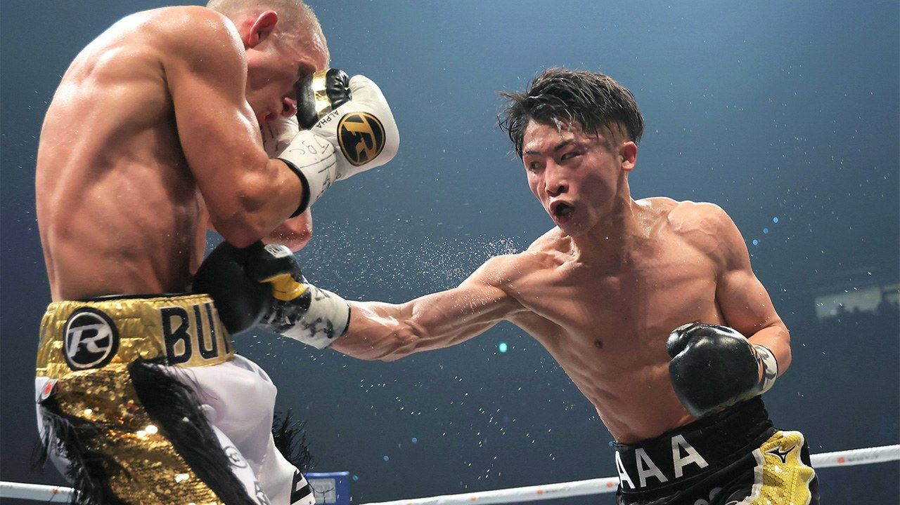
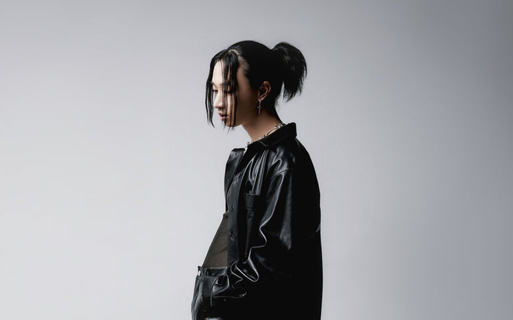

My biggest inspirations are Naoya Inoue, Gennady Golovkin and the great Muhammad Ali. As an amateur boxer, I train during my free time to improve on my skills!
I am a big fan of keshi, wave to earth,vaundy and The Millenial Club! I listen mainly to R&B hip-hop, indie rock and indie pop. I enjoy playing the guitar and singing, and I occasionally upload covers on YouTube! I love performing when I have the chance to!
I really LOVE reading books during my free time, and my all time recommended are (in order below). They shape the way that I think and cultivate positive values in my life!